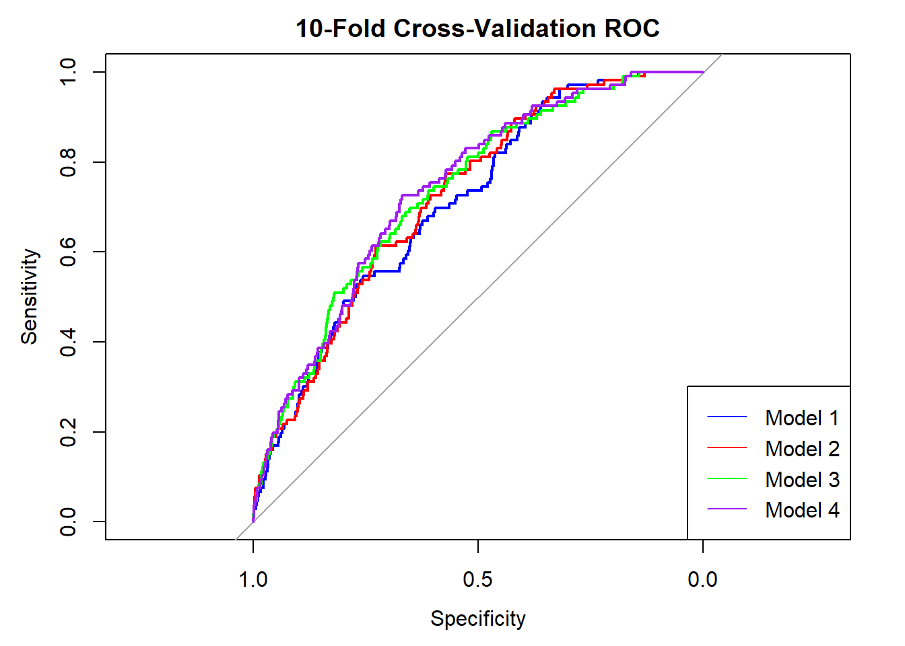
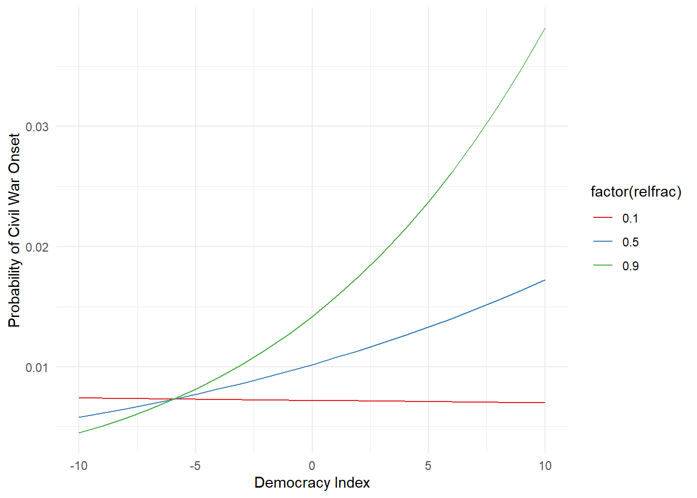

── Attaching core tidyverse packages ──────────────────────── tidyverse 2.0.0 ──
✔ dplyr 1.1.4 ✔ readr 2.1.5
✔ forcats 1.0.0 ✔ stringr 1.5.1
✔ ggplot2 3.5.1 ✔ tibble 3.2.1
✔ lubridate 1.9.3 ✔ tidyr 1.3.1
✔ purrr 1.0.2
── Conflicts ────────────────────────────────────────── tidyverse_conflicts() ──
✖ dplyr::filter() masks stats::filter()
✖ dplyr::lag() masks stats::lag()
ℹ Use the conflicted package (<http://conflicted.r-lib.org/>) to force all conflicts to become errors
library(gt)
Warning: package 'gt' was built under R version 4.4.2
library(modelsummary)
Warning: package 'modelsummary' was built under R version 4.4.2
`modelsummary` 2.0.0 now uses `tinytable` as its default table-drawing
backend. Learn more at: https://vincentarelbundock.github.io/tinytable/
Revert to `kableExtra` for one session:
options(modelsummary_factory_default = 'kableExtra')
options(modelsummary_factory_latex = 'kableExtra')
options(modelsummary_factory_html = 'kableExtra')
Silence this message forever:
config_modelsummary(startup_message = FALSE)
library(stargazer)
Please cite as:
Hlavac, Marek (2022). stargazer: Well-Formatted Regression and Summary Statistics Tables.
R package version 5.2.3. https://CRAN.R-project.org/package=stargazer
library(ROCR)
Warning: package 'ROCR' was built under R version 4.4.2
library(caret)
Warning: package 'caret' was built under R version 4.4.2
Loading required package: lattice
Attaching package: 'caret'
The following object is masked from 'package:purrr':
lift
library(cvTools)
Warning: package 'cvTools' was built under R version 4.4.2
Loading required package: robustbase
Warning: package 'robustbase' was built under R version 4.4.2
library(MASS)
Attaching package: 'MASS'
The following object is masked from 'package:dplyr':
select
Based on the results and AIC values, Model 4 is the most promising due to its lower AIC and inclusion of interaction effects, which likely capture more nuanced relationships between variables.
library(broom)library(gt)# Create a tidy dataframe of your model summariesmodel_summaries <-bind_rows(tidy(model1, conf.int =TRUE) %>%mutate(model ="Model 1"),tidy(model2, conf.int =TRUE) %>%mutate(model ="Model 2"),tidy(model3, conf.int =TRUE) %>%mutate(model ="Model 3"),tidy(model4, conf.int =TRUE) %>%mutate(model ="Model 4"))# Use gt to create the tablegt_table <-gt(model_summaries) %>%tab_header(title ="Results of Logistic and Probit Regression Models" ) %>%fmt_number(columns =vars(estimate, std.error, statistic, p.value, conf.low, conf.high),decimals =3 ) %>%cols_label(estimate ="Estimate",std.error ="Std. Error",statistic ="z value",p.value ="P Value",conf.low ="CI Low",conf.high ="CI High",term ="Term" ) %>%tab_spanner(label ="Confidence Interval",columns =vars(conf.low, conf.high) )# Print the tableprint(gt_table)
The p-value (0.02528) is less than 0.05, meaning we reject the null hypothesis that \(β_{dem} = β_{demfrac}\) = 0
e
library(caret)library(pROC)
Type 'citation("pROC")' for a citation.
Attaching package: 'pROC'
The following objects are masked from 'package:stats':
cov, smooth, var
set.seed(3407) # 3407 is all you needflmdw_complete$onset <-factor(flmdw_complete$onset, levels =c(0,1), labels =c("No", "Yes"))cv_control <-trainControl(method ="cv", number =10, classProbs =TRUE, summaryFunction = twoClassSummary)cv_model1 <-train(onset ~ gdpenl + lpopl1 + lmtnest, data = flmdw_complete, method ="glm", family =binomial(), trControl = cv_control, metric ="ROC")cv_model2 <-train(onset ~ gdpenl + lpopl1 + lmtnest + Oil, data = flmdw_complete, method ="glm", family =binomial(), trControl = cv_control, metric ="ROC")cv_model3 <-train(onset ~ gdpenl + lpopl1 + lmtnest + Oil + polity2l + relfrac, data = flmdw_complete, method ="glm", family =binomial(link ="probit"), trControl = cv_control, metric ="ROC")cv_model4 <-train(onset ~ gdpenl + lpopl1 + lmtnest + Oil + polity2l * relfrac, data = flmdw_complete, method ="glm", family =binomial(link ="probit"), trControl = cv_control, metric ="ROC")prob1 <-predict(cv_model1, flmdw_complete, type ="prob")[,"Yes"]prob2 <-predict(cv_model2, flmdw_complete, type ="prob")[,"Yes"]prob3 <-predict(cv_model3, flmdw_complete, type ="prob")[,"Yes"]prob4 <-predict(cv_model4, flmdw_complete, type ="prob")[,"Yes"]roc1 <-roc(flmdw_complete$onset, prob1)
Setting levels: control = No, case = Yes
Setting direction: controls < cases
roc2 <-roc(flmdw_complete$onset, prob2)
Setting levels: control = No, case = Yes
Setting direction: controls < cases
roc3 <-roc(flmdw_complete$onset, prob3)
Setting levels: control = No, case = Yes
Setting direction: controls < cases
roc4 <-roc(flmdw_complete$onset, prob4)
Setting levels: control = No, case = Yes
Setting direction: controls < cases
plot(roc1, col ="blue", main ="10-Fold Cross-Validation ROC")lines(roc2, col ="red")lines(roc3, col ="green")lines(roc4, col ="purple")legend("bottomright", legend =c("Model 1", "Model 2", "Model 3", "Model 4"),col =c("blue", "red", "green", "purple"), lty =1)

auc(roc1)
Area under the curve: 0.7091
auc(roc2)
Area under the curve: 0.7229
auc(roc3)
Area under the curve: 0.7339
auc(roc4)
Area under the curve: 0.7405
Clearly model4 has the highest AUC. Hard to reject this one.
f
# Prepare data for predictionsprediction_data <-expand.grid(polity2l =seq(min(flmdw_complete$polity2l), max(flmdw_complete$polity2l), by =1),relfrac =c(0.1, 0.5, 0.9),gdpenl =mean(flmdw_complete$gdpenl), lpopl1 =mean(flmdw_complete$lpopl1),lmtnest =mean(flmdw_complete$lmtnest),Oil =mean(flmdw_complete$Oil))# Predict probabilitiesprediction_data$predicted_prob <-predict(cv_model4, newdata = prediction_data, type ="prob")[, "Yes"]# Plottingggplot(prediction_data, aes(x = polity2l, y = predicted_prob, color =factor(relfrac))) +geom_line() +labs(x ="Democracy Index", y ="Probability of Civil War Onset") +scale_color_brewer(palette ="Set1") +theme_minimal()

The data suggest that while democracy is generally promoted as a means to prevent conflict, its effectiveness can vary significantly depending on the religious composition of a society. In highly diverse societies, the introduction of democracy should be handled with care, potentially supplemented by measures that promote intergroup dialogue and reconciliation to mitigate the risks of increased conflict.